Maya¶
Job Submission¶
You can submit jobs from within Maya by installing the integrated submission script, or you can submit them from the Monitor. The instructions for installing the integrated submission script can be found further down this page.


To submit from within Maya, select the Thinkbox shelf and press the green button there. If the green icon is missing, you can delete the shelf and restart Maya to get it back.
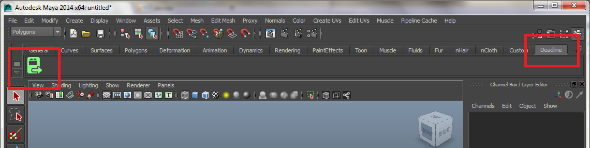Submission Options¶
The general Deadline options are explained in the Job Submission documentation, and the Draft/Integration options are explained in the Draft and Integration documentation. The Maya specific options are:
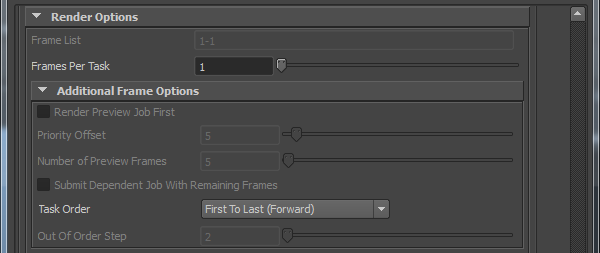Additional Frame Options
Render Preview Job First: When enabled, two jobs will be submitted - a PREVIEW job with a fraction of the frames, and a REST job with all other frames. The PREVIEW job can be submitted with slightly higher priority and will provide a glimpse into the final result. If its output looks incorrect, you can suspend the REST job before wasting render time rendering a wrong submission.
Priority Offset: Specify a higher priority for the PREVIEW job.
Number of Preview Frames: Specify the number of frames to preview.
Submit Dependent Job With Remaining Frames: If enabled, the REST job will be dependent on the PREVIEW job.
Task Order: The order in which to render the frames for the job.
Out Of Order Step: Defines the Nth frame step to use for some of the Task Order options.
Render Options
Camera: Select the camera to render with. Leaving this blank will force Deadline to render using the default camera settings (including multiple camera outputs).
Disable Auto Camera Tag: If you do not have
<Camera>inside the File Name Prefix in Render Settings, this will prevent Maya from automatically adding one (only available when a camera is selected).Project Path: The Maya project folder (this should be a shared folder on the network).
Output Path: The folder where your output will be dumped (this should be a shared folder on the network).
Maya Build: Force 32 bit or 64 bit rendering.
Submit Maya Scene File: If checked, the scene file will be submitted to the repository (as well as the XGen files).
Use MayaBatch Plugin: This uses our MayaBatch plugin that keeps the scene loaded in memory between frames, thus reducing the overhead of rendering the job.
Ignore Error Code 211: This allows a Maya task to finish successfully even if the Maya command line renderer returns the non-zero error code 211 (not available when using the MayaBatch plugin). Sometimes Maya will return this error code even after successfully saving the rendered images.
Strict Error Checking: Enable this option to have Deadline fail Maya jobs when Maya prints out an “error” or “warning” message that is known to impact the render. If disabled, Deadline will ignore all “error” or “warning” messages.
Use Local Asset Caching: Enabling local asset caching can reduce network overhead. When enabled, Deadline stores a local copy of all assets used during Maya renders on the Worker. The renderer then uses the assets from the local machine, rather than having to access them from their network location. The assets are stored in the Worker’s cache and can be used by subsequent frames or scenes submitted with the same assets without having to reach out to the network.
Startup Script: Maya will source the specified script file on startup (only available when using the MayaBatch plugin).
Command Line Args: Specify additional command line arguments to pass to the Maya command line renderer (not available when using the MayaBatch plugin).
Deadline Job Type: Select the type of Maya job you want to submit. The available options are covered in the next few sections.
Pipeline Tools¶
When using the integrated submitter to submit through Maya you have the ability to use any of the event plugins that you have enabled through the Deadline Monitor. This is done by opening the Pipeline Tools window via the Pipeline Tools button. This window is explained further in the Pipeline Tools documentation.
Maya Render Job¶
If rendering a normal Maya job, select the Maya Render Job type.
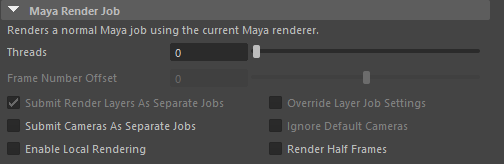General Options
The following options are available:
Threads: The maximum number of CPUs per machine to render with.
Frame Number Offset: Uses Maya’s frame renumbering option to offset the frames that are rendered.
Submit Render Layers As Separate Jobs: Enable to submit each layer in your scene as a separate job.
Override Layer Job Settings: If submitting each layer as a separate job, enable this option override the job name, frame list, and task size for each layer. When enabled, the override dialog will appear after you press Submit.
Submit Cameras As Separate Jobs: Enable to submit each camera as a separate job.
Ignore Default Cameras: Enable to have Deadline skip over cameras like persp, top, etc, when submitting each camera as a separate job (even if those cameras are set to renderable).
Enable Local Rendering: If enabled, Deadline will render the frames locally before copying them over to the final network location. This has been known to improve the speed of Maya rendering in some cases.
Render Half Frames: If checked, frames will be split into two using a step of 0.5. Note that frame 0 will save out images 0 and 1, frame 1 will save out images 2 and 3, frame 2 will save out images 4 and 5, etc.
Region Rendering Options¶
If submitting a Maya Render Job or an Arnold Export Job, you can choose to submit a region rendering job. You can also submit a dependent assembly job to assemble the image when the main region job completes. Otherwise, the output formats that are supported are BMP, DDS, EXR, JPG, JPE, JPEG, PNG, RGB, RGBA, SGI, TGA, TIF, and TIFF.
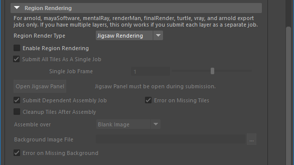The following renderers are supported for Region Rendering:
MayaSoftware
Mental Ray
Arnold (and export jobs)
RenderMan
FinalRender
Turtle
V-Ray
Redshift
Iray
Note, if you have multiple layers in your scene file, Region Rendering will ONLY work if you submit each layer as a separate job.
The following options are available:
Region Render Type: If set to Jigsaw Rendering then the submission will use Jigsaw, otherwise it will use a grid of tiles.
Enable Region Rendering: If enabled, the frame will be split into multiple tiles that are rendered individually and can be assembled after.
Submit All Tiles as a single Job: If enabled, a single frame will be submitted with all tiles in a single job, otherwise each tile will be submitted as a separate job with each frame being a separate frame.
Open Jigsaw Panel: Click this button to open the standalone PyQt Jigsaw panel to interact with the Jigsaw GUI system to create your tiles and regions. Note, this Jigsaw panel MUST be open during submission.
Submit Dependent Assembly Job: Submit a job dependent on the region job that will assemble the tiles, if doing jigsaw animation a separate job will be created for each different named output file
Cleanup Tiles after Assembly: If enabled, the tiles will be deleted after assembly.
Error on Missing Tiles: If enabled, then if any of the tiles are missing the assembly job will fail.
Assemble over: Determine what the Draft Tile Assembler should assemble over be it a blank image, previous output or a specified file.
Background Image File: If “specified file” option above is selected, then browse for a background image file to assemble the tile renders with.
Error on Missing Background: If enabled, then if the background file is missing the Draft Tile Assembler job will fail.
GPU Affinity¶
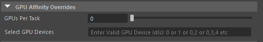If you are GPU rendering, there are additional GPU affinity override options:
Warning
Ensure you only use one of these settings at any one time! You can’t combine the Worker centric GPU Affinity with the GPUs Per Task or Select GPU Devices setting below.
GPUs Per Task: If set to 0 (the default), then the GPU renderer will be responsible for automatically choosing the GPUs used during rendering.
If this is set to 1 or greater, then each task for the job will be assigned specific GPUs. This can be used in combination with concurrent tasks to get a distribution over the GPUs. For example:
if this is set to 1, then tasks rendered by the Workers thread 0 would use GPU 0, thread 1 would use GPU 1, etc.
if this is set to 2, then tasks rendered by the Workers thread 0 would use GPUs {0,1}, thread 1 would use GPUs {2,3}, etc.
Select GPU Devices: A comma separated list of specific GPU device ID(s) can be entered instead of using the above ‘GPUs Per Task’ option (which must be set to “0”). Valid examples include: “0” or “1” or “0,1” or “2,4” without the quotation marks. Note: “Concurrent Tasks” must be set to “1” only.
Renderer Options¶
Mental Ray¶
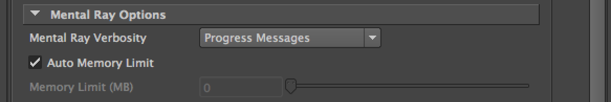If rendering with Mental Ray, there is an additional Mental Ray Options section under the Maya Options:
Mental Ray Verbosity: Set the verbosity level for Mental Ray renders.
Auto Memory Limit: If enabled, Mental Ray will automatically detect the optimal memory limit when rendering.
Memory Limit: Soft limit (in MB) for the memory used by Mental Ray (specify 0 for unlimited memory).
V-Ray¶
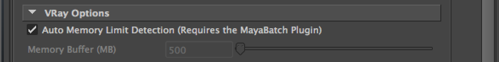If rendering with V-Ray, there is an additional V-Ray Options section under the Maya Options:
Auto Memory Limit Detection: If enabled, Deadline will automatically detect the dynamic memory limit for V-Ray prior to rendering.
Memory Buffer: Deadline subtracts this value from the system’s unused memory to determine the dynamic memory limit for V-Ray.
Arnold¶
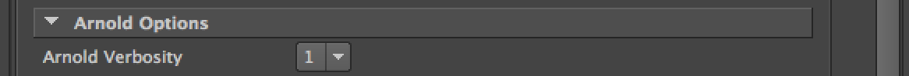If rendering with Arnold, there is an additional Arnold Options section under the Maya Options:
Arnold Verbosity: Set the verbosity level for Arnold renders.
Note that the verbosity levels have changed with newer versions of the Maya to Arnold plugin. The Maya submitter automatically detects the version of Maya To Arnold installed and lists the verbosity levels accordingly.
Maya To Arnold Version 2 and lower:
0 (Error): only print errors
1 (Warning & Info): print errors, warnings, and render statistics. Select this verbosity setting to allow the Deadline Monitor to show render progress. This is selected by default.
2 (Debug): print all render info. Note that this may slow down your render time.
Maya To Arnold Version 3 and higher:
0 (Error): only print errors
1 (Warnings): print errors and warnings
2 (Info): print errors, warnings, and render statistics that do not slow down rendering. Select this verbosity setting to allow the Deadline Monitor to show render progress. This is selected by default.
3 (Debug): print all render info. Note that this may slow down your render time.
MR Export Job¶
If rendering a Mental Ray Export job, select the Mental Ray Export Job type.
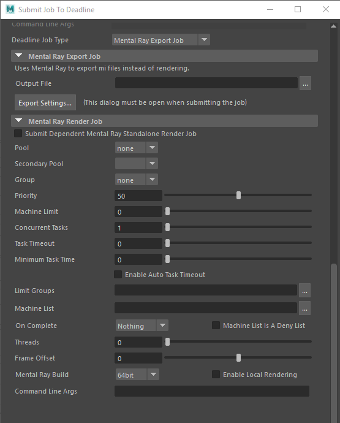The following options are available:
Output File: The full filename of the Mental Ray files that will be exported. Padding is handled automatically by the exporter.
Export Settings: This opens up the Mental Ray export settings dialog where you can configure the remaining of the settings. Note that this dialog must be open when you submit the job.
You have the option to submit a dependent Mental Ray Standalone job that will render the exported mi files after the export job finishes. The Mental Ray specific job options are:
Threads: The number of threads to use for rendering.
Frame Offset: The first frame in the input MI file being rendered, which is used to offset the frame range being passed to the mental ray renderer.
Mental Ray Build: You can force 32 or 64 bit rendering.
Enable Local Rendering: If enabled, the frames will be rendered locally, and then copied to their final network location.
Command Line Args: Specify additional command line arguments you would like to pass to the mental ray renderer.
V-Ray Export Job¶
If rendering a V-Ray Export job, select the V-Ray Export Job type.
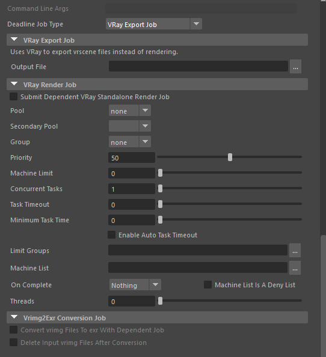The following options are available:
Output File: The full file name of the V-Ray files that will be exported (padding is handled automatically by the exporter).
You have the option to submit a dependent V-Ray Standalone job that will render the exported vrscene files after the export job finishes. The V-Ray specific job options are:
Threads: The number of threads to use for rendering.
Vrimg2Exr Conversion Job: If you are submitting a dependent V-Ray Standalone job, and the output format is vrimg, you have the option to submit a dependent job that will convert the vrimg files to exr files, using V-Ray’s vrimg2exr application.
RMan Export Job¶
If rendering a RenderMan Export job, select the RenderMan Export Job type.
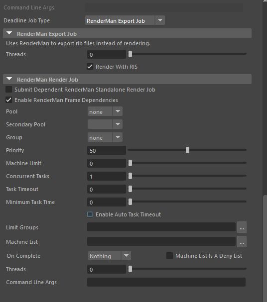The following options are available:
Threads: The number of threads to use for exporting. Specify 0 to automatically use the optimal number of threads.
Render with RIS: If checked, the exported RIB files will have RIS set as the renderer instead of REYES.
You have the option to submit a dependent RenderMan Render job that will render the exported rib files after the export job finishes. The RenderMan specific job options are:
Enable RenderMan Frame Dependencies: If checked, the RenderMan Job will have Frame Dependencies. If your scene has static content, do not use!
Threads: The number of threads to use for rendering.
Command Line Args: Specify additional command line arguments you would like to pass to the RenderMan renderer.
Arnold Export Job¶
If rendering an Arnold Export job, select the Arnold Export Job type.
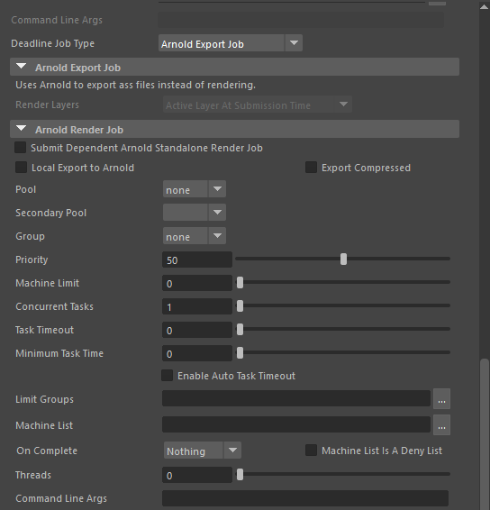The following options are available for Arnold Export Jobs:
- Render Layers (new in 10.1.1): Which render layers to submit. This drop-down is only enabled when there are render layers set up in the scene. Select from the following options:
Active Layer At Submission Time: Only the active layer at the time of submission will be exported to an Arnold stand-alone scene file (
.assfile).All Render Layers (Separate Jobs): A job will be submitted to export each render layer in the scene to an Arnold stand-alone scene file (
.assfile).
You have the option to submit a dependent Arnold Standalone job that will render the exported .ass files after the export job finishes. The Arnold Standalone specific job options are:
Local Export to Arnold: If this option is set to true, the Arnold .ass files will be exported locally.
Threads: The number of threads to use for rendering.
Command Line Args: Specify additional command line arguments you would like to pass to the Arnold renderer.
Maxwell Export Job¶
If rendering a Maxwell Export job, select the Maxwell Export Job type.
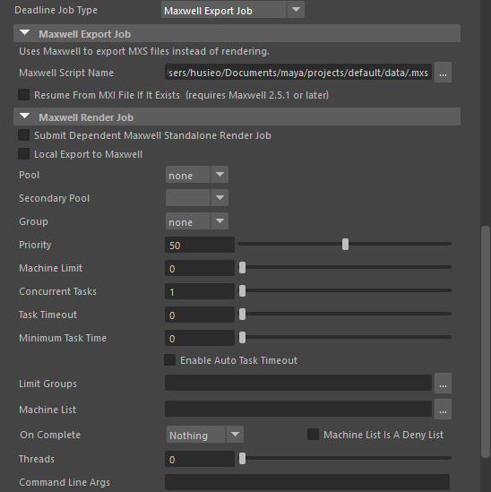The following options are available:
Maxwell Script Name: The path that the exported Maxwell MXS files will be saved to.
You have the option to submit a dependent Maxwell Standalone job that will render the exported .MXS files after the export job finishes. The Maxwell Standalone specific job options are:
Local Export to Maxwell: If this option is set to true, the Maxwell MXS files will be exported locally.
Threads: The number of threads to use for rendering.
Command Line Args: Specify additional command line arguments you would like to pass to the Maxwell renderer.
Co-op Rendering
Cooperative Rendering: Enable this to use Maxwell’s co-op rendering feature to render the same image across multiple computers. You can then use Maxwell to combine the resulting output after the rendering has completed.
Split Co-op Renders Into Separate Jobs: By default, a co-op render is submitted as a single job, where each task represents a different seed. If this option is enabled, a separate job will represent each seed.
Number of Co-op Renders: The number of co-op render jobs to submit to Deadline.
Auto-Merge Files: Enable this option to auto-merge the co-op renders into the final image.
Fail On Missing Intermediate Files: If enabled, the auto-merge will fail if any co-op renders are missing.
Delete Intermediate Files: If enabled, the co-op renders will be deleted after the final image is merged together.
Redshift Export Job¶
If rendering a Redshift Export job, select the Redshift Export Job type.
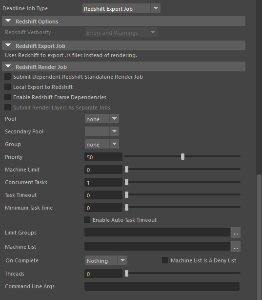The normal Redshift renderer options are available.
You have the option to submit a dependent Redshift Standalone job that will render the exported .rs files after the export job finishes. The Redshift Standalone specific job options are:
Submit Dependent Redshift Standalone Render Job: If enabled, the Redshift Standalone dependent job will be submitted.
Local Export to Redshift: If this option is set to true, the redshift rs file will be exported locally.
Enable Redshift Frame Dependencies: If Checked, the Redshift Job will have Frame Dependencies. If your scene contains static content, do not use!
Submit Render Layers As Separate Jobs: Check this to submit each renderable Render Layer as a separate Deadline job. Note that the frame range will be pulled from the render globals for each layer.
Threads: The number of threads to use for rendering.
Command Line Args: Specify additional command line arguments you would like to pass to the Redshift renderer.
Bifrost Sim Job¶
To run a Bifrost Simulation job, select the Bifrost Simulation Job type. This will run a simulation for all Bifrost containers in the Maya scene.
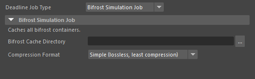The following options are available:
Bifrost Cache Directory: The path that all Bifrost containers will be simulated to.
Compression Format: The style of compression to be used for the Bifrost container simulation.
Alembic Export Job¶
To run an Alembic Export job, select the Alembic Export Job type.
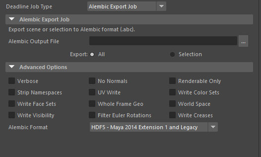The following options are available:
Alembic Output File: The directory path and filename of the Alembic file that will be created.
Export: Select “All” to export all Polygon or NURBS objects in your scene, select “Selection” to only export selected/highlighted Polygon or NURBS objects in your scene.
You also have the option to set the advanced options of the Alembic export job. These options are described in the Autodesk Maya documentation and should be left untouched by novice users.
Maya Script Job¶
To run a Maya Script Job, select the Maya Script Job type.
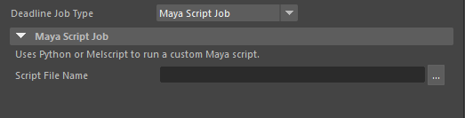This job will execute a submitted Python or Melscript file.
The following options are available:
Script File Name: The directory and name of the Melscript or Python file that will be run.
When running script jobs Deadline exposes 3 melscript functions so that Deadline job information can be accessed within the script. The functions that are defined are:
DeadlinePluginInfo: This function takes the name of a plugin info property of the Deadline job and returns the value as a string.
DeadlineExtraInfo: This function takes the name of an extra info key value pair defined in the Deadline job and returns the value as a string.
DeadlineValue: This function takes in the name of a property of the task and returns the appropriate value. The exposed properties are DataFileName, PluginDirectory, JobsDataDirectory, StartFrame, EndFrame, ThreadNumber, and TestValue.
Fluid Caching Job¶
To run a Fluid Caching Job, select the Fluid Caching Job type.
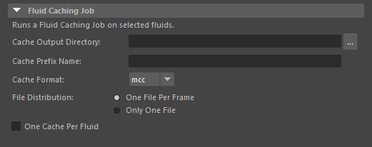This job will cache selected fluids in a Maya scene. At least one fluid must be selected in order to run a Fluid Caching Job.
The following options are available:
Cache Output Directory: The path which the Fluid Cache(s) will be saved to.
Cache Prefix Name: The prefix to be used for any Fluid Cache files to be written.
Cache Format: Mcc (Maya pre-2014) or Mcx (Maya 2014 or newer)
File Distribution: Choose to have one file (one cache) for each frame, or only one cache for the entire frame range.
One Cache Per Fluid: Choose to have separate caches for each fluid, or only one cache that will contain all selected fluids.
Geo Caching Job¶
To run a Geometry Caching Job, select the Geometry Caching Job type.
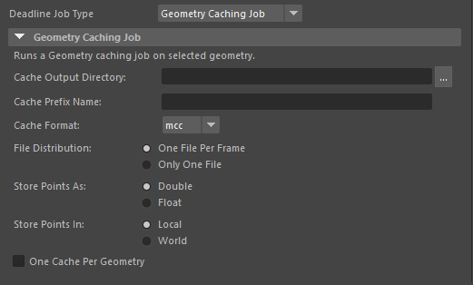This job will cache selected geometry in a Maya scene. At least one geometry object must be selected in order to run a Geometry Caching Job.
The following options are available:
Cache Output Directory: The path which the Geometry Cache(s) will be saved to.
Cache Prefix Name: The prefix to be used for any Geometry Cache files to be written.
Cache Format: Mcc (Maya pre-2014) or Mcx (Maya 2014 or newer)
File Distribution: Choose to have one file (one cache) for each frame, or only one cache for the entire frame range.
Store Points As: Choose the format in which geometry points will be stored (Double or Float).
Store Points In: Choose the context in which geometry points will be stored (Local or World).
One Cache Per Geometry: Choose to have separate caches for each geometry, or only one cache that will contain all selected geometry.
Cross-Platform Rendering Considerations¶
In order to perform cross-platform rendering with Maya, you must setup Mapped Paths so that Deadline can swap out the Project and Output paths where appropriate. You can access the Mapped Paths Setup in the Monitor while in power user mode by selecting Tools -> Configure Repository. You’ll find the Mapped Paths Setup in the list on the left.
As long as all paths used in your Maya scene are relative to the Project and Output paths, and those paths are network accessible, you should have no problems performing cross-platform renders.
However, if you are using absolute paths in your Maya scene file, it is possible for Deadline to swap them as well, but you must save your scene file as a Maya Ascii (.ma) file. Because .ma files are ascii files, Deadline can read them and swap out paths as necessary. If they’re saved as Maya Binary (.mb) files, they can’t be read, and can’t have their paths swapped.
Plugin Configuration¶
You can configure the MayaBatch and MayaCmd plugin settings from the Monitor. While in power user mode, select Tools -> Configure Plugins and select the Maya plugin from the list on the left.
MayaBatch¶

Render Executables
Maya Executable: The path to the Maya executable file used for rendering. Enter alternative paths on separate lines. Different executable paths can be configured for each version installed on your render nodes.
Maxwell For Maya (version 2 and later)
Workers To Use Interactive License: A list of Workers that should use an interactive Maxwell license instead of a render license. Use a , to separate multiple Worker names, for example: worker001,worker002,worker003
Path Mapping For Scene Files (For Mixed Farms)
Enable Path Mapping: If enabled, path mapping will be performed on the contents of the Maya scene file.
Path Mapping Mode: The first option uses Maya’s ‘dirmap’ command to map paths when the scene is loaded, which works on .ma and.mb files. The second option creates a local copy of the .ma file, and uses text replacement on the file to map paths.
Logging
Suppress Warning Messages: If enabled, warning messages printed out by Maya will not be included in the render log.
Silence Scene Load Errors: If enabled, errors that occur when loading a scene file are silenced by Maya and will not be included in the render log.
Log Script Contents To Render Log: If enabled, the full script that Deadline is passing to Maya will be written to the render log. This is useful for debugging purposes.
CPU Affinity
Limit Threads To CPU Affinity: If enabled, the number of render threads will be limited to the CPU affinity of the rendering Worker.
Local Asset Caching
Remote Asset Path: When scanning a Maya scene file, it is necessary to identify which assets are located on a remote storage device. The way Deadline determines that is by checking its path prefix. If the path starts with a prefix listed under this “Remote Asset Path” option, it is assumed to be on a remote storage device, and will be cached locally upon render.
Worker LAC Directory: These options determine where on the local Worker drive the assets will be cached. Since directory structures are set up differently across different platforms, and caching is cross-platform, it is necessary to have three different options based on the operating system that the Worker is running on.
Days until Cache Delete: It is necessary to do some housekeeping on the Workers in order to clean up the local cache and prevent the local storage to fill up unnecessarily. This option allows user to specify when an asset in the cache will be deleted. If a cached asset is not accessed within the specified number of days, that file will be removed from the cache.
MayaCmd¶
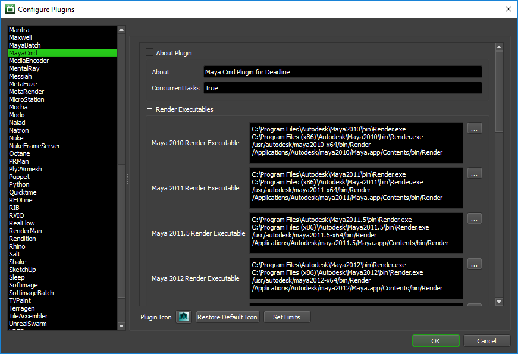Render Executables
Maya Executable: The path to the Maya executable file used for rendering. Enter alternative paths on separate lines. Different executable paths can be configured for each version installed on your render nodes.
Maxwell For Maya (version 2 and later)
Workers To Use Interactive License: A list of Workers that should use an interactive Maxwell license instead of a render license. Use a , to separate multiple Worker names, for example: worker001,worker002,worker003
Path Mapping For ma Scene Files (For Mixed Farms)
Enable Path Mapping For ma Files: If enabled, a temporary ma file will be created locally on the Worker for rendering and Deadline will do path mapping directly in the ma file.
Logging
Suppress Warning Messages: If enabled, warning messages printed out by Maya will not be included in the render log.
Integrated Submission Script Setup¶
The following procedures describe how to install the integrated Maya submission script. This script allows for submitting Maya render jobs to Deadline directly from within the Maya editing GUI. The script and the following installation procedure has been tested with Maya 2010 and later.
You can either run the Submitter installer or manually install the submission script.
Note
As of Deadline 10.0.10.3 the manual installation documentation and submitter installers have been updated to install both the userSetup.mel and DeadlineMayaClient.mel files into the user directory. This change has occurred to allow the submitter installer to work without requiring admin access and to ensure that all versions of Maya will use the same client script file. This should not affect any current installs and is not a required update.
Submitter Installer¶
Run the Submitter Installer located at
<Repository>/submission/Maya/Installers.
Manual Installation¶
The Maya integrated submitter can be installed for either a specific user or for all users.
Current User
Copy the file
[Repository]/submission/Maya/Client/DeadlineMayaClient.melto[MAYA_APP_DIR]/scripts.If you do not have a
userSetup.melin[MAYA_APP_DIR]/scripts, copy the file[Repository]/submission/Maya/Client/userSetup.melto[MAYA_APP_DIR]/scripts.If you have a
userSetup.melfile, add the following line to the end of this file:if( startsWith( whatIs DeadlineMayaClient, “Mel procedure found in” ) ){ DeadlineMayaClient(); }else{ warning( “DeadlineMayaClient either has errors or has not been installed.” ); }
Note
MAYA_APP_DIR defaults to [My Documents]/maya on Windows, /Users/[USERNAME]/Library/Preferences/Autodesk/maya on macOS, and /home/[USERNAME]/maya on linux.
All Users
Copy the contents of
[Repository]/submission/Maya/Client/AllUsersto a location accessible by all users.Set the Environment variable
MAYA_MODULE_PATHto the directory configured above.
Network Installation¶
Instead of installing the integrated submitter on each machine individually you are also able to do a network install.
You can do this by setting up a userSetup.mel and DeadlineMayaClient.mel in a folder on your network.
Once this is set up, set the environment variable MAYA_SCRIPT_PATH on each of the machines to include the folder that contains DeadlineMayaClient.mel.
Verify Installation¶
The next time Maya is started, a Deadline shelf should appear with a green button that can be clicked on to launch the submitter.
If you don’t see the Deadline shelf, it’s likely that Maya is loading another userSetup.mel file from somewhere. Maya can only load one userSetup.mel file, so you either have to configure Maya to point to the file mentioned above, or you have to modify the file that Maya is currently using as explained above. To figure out which userSetup.mel file Maya is using, open up Maya and then open up the Script Editor. Run this command:
whatIs userSetup.mel
Custom Sanity Check¶
You can create a CustomSanityChecks.mel file alongside the main SubmitMayaToDeadline.mel in the [Repository]\submission\Maya\Main folder, and it can be used to set defaults in the submission script before it is displayed.
For example, here is a script that can set the default Limit Groups based on the renderer:
AddStringAttribute( "deadlineLimitGroups" );
if( GetCurrentRenderer() == "mentalRay" )
setAttr defaultRenderGlobals.deadlineLimitGroups -type "string" "mray_for_maya";
else if( GetCurrentRenderer() == "vray" )
setAttr defaultRenderGlobals.deadlineLimitGroups -type "string" "vray_for_maya";
else
setAttr defaultRenderGlobals.deadlineLimitGroups -type "string" "";
The available Deadline globals are defined in the SavePersistentDeadlineOptions function in the SubmitMayaToDeadline.mel script. These can be used to set the initial values in the submission dialog.
You can also create a CustomPostSanityChecks.mel file alongside the main SubmitMayaToDeadline.mel in the [Repository]\submission\Maya\Main folder. It can be used to run some additional checks after the user clicks the Submit
button in the submitter. It must define a global proc called CustomPostSanityCheck() that takes no arguments, and must return 0 or 1. If 1 is returned, the submission process will continue, otherwise it will be aborted. Here
is an example script:
global proc int CustomPostSanityCheck()
{
// Don't allow mayaSoftware jobs to be submitted
if( GetCurrentRenderer() == "mayaSoftware" )
return 0;
return 1;
}
FAQ¶
Do I need to install Maya on each machine that will render and all 3rd party plugins that are required?
Yes. Traditionally, Maya and all required scripts & 3rd party plugins should always be installed and licensed (where applicable) on each machine where it is intended to network render on. However, VFX studios tend to operate a Linux OS platform and take advantage of installing software onto a centralized file server that importantly has the performance to support this configuration and then all local machines can be configured to point at this central location. Additionally, 3rd party plugins/scripts can then be added to this central server path location in combination with floating licenses. This level of custom deployment and configuration is beyond the scope of Thinkbox support and you would be best advised to engage an approved Autodesk reseller or Autodesk directly on best practices here. Here are some URL links, which may be of assistance. If you are able to install and successfully run Maya & all your plugins/scripts from a network location in your studio, then Deadline will be able to support network rendering from this location as well. Simply update the MayaBatch & MayaCmd plugins with the new executable path location using Deadline Monitor, click on “Tools” –> “Power User Mode” –> “Configure Plugins…” –> “MayaBatch” or “MayaCmd”.
Can Maya’s environment variables be controlled?
Yes. Typically a
Maya.envfile is used as explained in the Autodesk Maya docs. Standard operating system commands can also be used to set an environment variable via Deadline’s Render Environment controls. Here are some links to assist you in locating the actual Maya environment variables:
Which versions of Maya are supported?
Maya versions 2010 and later are all supported.
Which Maya renderers are supported?
All Maya renderers should work fine with Deadline. The renderers that are known to work with Deadline are 3Delight, Arnold, Caustic Visualizer, Final Render, Gelato, Iray, Krakatoa, Maxwell, MayaSoftware, MayaHardware, MayaVector, Mental Ray, Octane, RedShift, RenderMan, RenderMan RIS, Turtle, and V-Ray. If you see a Maya renderer that’s not on this list, contact Deadline Support and let us know!
Does the Maya plugin support Tile Rendering?
Yes. See the Region Rendering Options section above for more details.
Does the Maya plugin support multiple arbitrary sized, multi-resolution Tile Rendering for both stills or animations and automatic re-assembly, including the use of multi-channel image formats and arbitary Render Passes? (incl. V-Ray/Arnold/MR support?)
Yes. We call it ‘Jigsaw’ and it’s unique to the Deadline system! See the “Region Rendering Options” section above for more details.
Which Maya application should I select as the render executable in the MayaCmd plugin configuration?
Select the Render.exe application. This is Maya’s command line renderer.
Which Maya application should I select as the render executable in the MayaBatch plugin configuration?
Select the MayaBatch.exe application. This is Maya’s batch renderer.
What is the MayaBatch plugin, and how is it different than the MayaCmd plugin?
This plugin keeps the Maya scene loaded in memory between frames, thus reducing the overhead of rendering the job. This is the recommended plugin to use, but if you run into any problems, you can always try using the MayaCmd plugin.
Why is each task of my job is rendering the same frame(s)?
This happens if you have the Renumber Frames option enabled in your Maya render settings. Each task is a separate batch, and if Renumber Frames is enabled, each batch will start at that frame number.
I have a multi-core machine, but when rendering the machine isn’t using 100% of the cpu. What can I do?
When submitting the job to Maya, set the Threads option to 0. This will instruct Maya to use the optimal number of threads when rendering based on the machine’s core-count.
Does Deadline support Maya render layers?
Yes. You can either submit one job that renders all the layers, or you can submit a single job per layer.
Can I render scenes that use Maya Fur?
A recommended setup for Maya is to have your project folder on a shared location that all of your machines can see (whether it be a Windows folder share or a mapped path), then create your Maya scene in this project folder. This way, when you submit the job, you can specify the shared project path in the submission dialog, and all of your Worker machines will be able to see it (and therefore see the Maya Fur folders within the project folder).
Can I make use of the particle cache during network renders?
Yes you can. All that is necessary to do this is to make your scene’s project directory network-accessible by your Workers. Please consult the Autodesk Maya documentation on how to create and save a particle disk cache.
Can I submit custom Maya jobs to Deadline?
Yes you can. We support a number of custom job types which are all available via the integrated Maya submitter:
When clicking on one of the folder browser buttons in the Maya submission dialog, I sometimes get an error.
There is an article on this problem. It’s a .NET problem that seems to randomly occur when the user specifies a path of more than 130 characters, but it looks like Microsoft provides a hotfix for it.
When submitting the job from Maya, if I check the Submit Each Render Layer As A Separate Job box, no jobs are submitted when you click submit.
The render layers you want to submit need to be set to renderable (the letter ‘R’ need to be there next to the render layer) for the submitter to submit the layer. Note that render layer should not be confused with display layer. Deadline only deals with render layers. It is not using the Maya option to render only the content of a specific display layer.
I’m trying to render certain frame range from Maya, but Deadline is rendering the entire frame range set in the Maya render globals.
If you have the Submit Each Render Layer As A Separate Job box checked, Deadline grabs the frame information from each individual layer’s render globals when submitting the job. If unchecked, Deadline will use the info from the Frame List in the submission dialog.
Rendering Maya scenes with Deadline is taking forever in comparison to a local render of the same file.
One thing you can try is ensuring that the Local Rendering option is enabled when submitting the job to Deadline. This forces Maya to render the frame locally, then copy it to the final destination after. This has been known to improve rendering speeds.
How do I configure Mental Ray Satellite to render Mental Ray for Maya jobs with Deadline?
Choose a satellite master machine, then modify the maya.rayhosts of the that machine so that it uses the Workers you want.
Only put the master machine in Deadline.
Submit a job, and make sure that the job will be picked-up by the master machine you have setup. Use pools to do so.
In the job property page of the Maya job, in the Maya tab, you could add the following line in the additional arguments field: -rnm 1
This -rnm 1 means “render no master true”, which will force the master not to participate in the rendering but only submit and receive the render tasks. You will get better results this way.
You could also use -rnm 0 which means “render no master false” and force 1 cpu on the master (if your master is a dual cpu) so you have 1 cpu free on the master to dispatch the task. In short you should always have 1 cpu free on the master machine for dispatching or else your render time will suffer.
Can I submit MEL or Python Maya script files to Deadline?
Yes, you can submit your own custom scripts from the Advanced tab in the Maya submission script in the Monitor Submit menu or via the Maya Script Job job type in the integrated Maya submitter.
Can I perform Fume FX simulations with Deadline?
Yes and it’s supported by both our MayaBatch & MayaCmd plugins. To do so, follow these steps:
Requires min. FumeFX for Maya v3.5.4
Ensure you have “MayaSoftware” selected as renderer in Maya.
Before you launch the Maya submission script, make sure that the Fume FX NetRender (Backburner) toggle button is “ON” in the FumeFX options in Maya.
Fume FX output paths must be UNC or via mapped drive letter (Windows)
Deadline Worker must have either Fume FX “full” or Fume FX “simulation” license available and authorized. If you wish to use “Sim Only Mode” license, then you can switch via the “Fume FX Prefs Dialog” in Maya prior to Deadline Submission. Note, that you must restart Maya for this license mode change to be committed. Do this before submitting to Deadline if you need to use a Sim. only license on a Deadline Worker.
Submit any arbitrary Maya single frame to begin the Fume FX Simulation (Fume FX uses its own frame range). However, note that Maya will render whatever single frame the Fume FX job was submitted on at the end of the simulation.
Please see the Fume FX for Maya help manual for more details on the above requirements.
How can I region render large V-Ray scenes?
By changing the memory frame buffer on the V-Ray Common tab of the render settings to None you will be able to render larger tiles since V-Ray does not crop the tiles.
How many GPUs can I use with RedShift Renderer?
Using Deadline’s GPU Affinity you can assign up to a maximum of 8 GPUs to be used by RedShift per machine. Note, this current RedShift limitation also means that only the first 8 GPUs (by ordinal) are usable. Unfortunately, using multiple Deadline Workers with GPU affinity configured (Worker 1: 0-7, Worker 2: 7-15) does not workaround this limitation, which is RedShift / machine limited at this time. The following RedShift error will occur if you attempt to use more GPU devices than is currently supported:
2016-05-17 16:18:34: 0: STDOUT: ASSERT FAILED 2016-05-17 16:18:34: 0: STDOUT: File GPUComputing_CUDA.cpp 2016-05-17 16:18:34: 0: STDOUT: Line 442 2016-05-17 16:18:34: 0: STDOUT: Device ordinal out of range (8)
I am overriding the GPU affinity of my Workers but Redshift appears to be using the wrong GPUs.
When rendering using Redshift, the index of the gpu in the render logs may not be accurate. Redshift prints out the indexes based on which GPUs it is using and not based off of the index of the GPU on the machine.
When rendering my Workers are ignoring the CPU Affinity.
Some renderers modify the CPU affinity when a render starts. In these cases you can enable the Plugin Configuration option “Limit Threads To CPU Affinity” which will limit the number of threads the renderer can use.
Why doesn’t Maya 2018.5 have it’s own render executable?
Unlike previous years Maya 2018.5 is not a separate install and is treated as Maya 2018 in all respects.
Why is Renderman 22 considered a separate renderer in the monitor submitter?
For Renderman 22 Pixar rewrote their Maya support so it requires a separate render workflow compared to previous versions. Thus we need a way to tell which workflow we should be using.
Error Messages and Meanings¶
This is a collection of known Maya error messages and their meanings, as well as possible solutions. We want to keep this list as up to date as possible, so if you run into an error message that isn’t listed here, please visit the Thinkbox Help Centre and let us know.
Error in StartJob: Error in RenderExecutable: 64 bit Maya ####_0 render executable was not found in the semicolon separated list “C:/Program Files/Autodesk/Maya####/bin/MayaBatch.exe;/usr/autodesk/maya####/bin/maya”. The path to the render executable can be configured from the Plugin Configuration in the Deadline Monitor.
(Where #### is the year of Maya release such as “2015”). Using Deadline Monitor, click on “Tools” –> “Power User Mode” –> “Configure Plugins…” –> “MayaBatch” or “MayaCmd”. The above error message is indicating that Deadline has been unable to locate the correct local install path of Maya on the machine which generated the error message. Deadline already ships with all the known, default install path locations for Maya across the 3 supported operating systems. So you shouldn’t have to edit these paths unless you have installed Maya to a custom location. Please note the subtle diffences between the different executables being used between MayaBatch & MayaCmd and also the slightly different file path locations depending on OS. If in doubt, please contact Deadline Support for further assistance.
Error in RenderTasks: Monitored managed process “MayaBatch” has exited or been terminated.
This is the most common Maya error in Deadline. The “MayaBatch” plugin, which keeps the Maya scene file open between tasks (frames) will sometimes not display the full stack trace (error message) regarding the root cause of your issue. To obtain a full error message, you should re-submit the Maya file via either Monitor –> “Submit Maya Job To Deadline” –> “Advanced Options” –> uncheck the “Use MayaBatch Plugin” checkbox OR alternatively in the in-app, Maya submission UI –> “Render Options” –> uncheck the “Use MayaBatch Plugin” checkbox. Allow this job to run and fail in Deadline and a more comprehensive error message should now be available. It is this comprehensive error message that should be sent to Deadline Support if further assistance is required.
Exception during render: Error: (Mayatomr) : could not get a license
Mental Ray is reporting that it can’t find a license. Mental Ray requires an additional license for network rendering, whereas renders such as mayaSoftware and mayaHardware simply uses your Maya license.
Certain versions of Maya come with satellite licenses for Mental Ray, but this requires some additional setting up to enable network rendering. It’s probably best to contact the Maya support team about this.
Error: setAttr: The attribute ‘x’ is locked or connected and cannot be modified.
Some of Maya’s attributes are updated during the process of rendering on Deadline. If you get this error for a particular setting (in the example above, referred to as ‘x’), that you right-click on the actual ‘text’ label of it’s UI in Maya and select “Unlock Attribute”, to ensure this particular setting can be updated in Maya by Deadline. An example error might look like this:
STDOUT: mel: Error: file: C:/Users/mike/AppData/Local/Temp/tmp6386.tmp line 12: setAttr: The attribute 'vraySettings.fileNamePrefix' is locked or connected and cannot be modified.In the above example, in the ‘Render Settings’ in Maya, the V-Ray ‘File name prefix:’ setting has been locked and should be unlocked (by right-clicking on the UI text label) to resolve the issue and the file re-submitted to Deadline.
Exception during render: Renderer returned non-zero error code, 211
When Maya prints this error message it usually means that Maya can’t access a particular path because it either doesn’t exist or it doesn’t have the necessary read/write permissions to access it. This error tends to occur when Maya is either loading the scene or other referenced data or when saving the final output images.
When you get this error, you should check the Worker log that is included with the error report. If it is a path problem, Maya shows which path it wasn’t able to access. Check to make sure that the Worker machine rendering the job can see the path, and that it has the necessary permissions to read/write to it. If it’s not a path problem, the Worker log should still provide some useful information that can help explain the problem.
There is also the case where Maya exits with this error code after successfully rendering the images. If this is the case, there are two things to try:
When you submit the job, enable the option to ignore error code 211.
When you submit the job, enable the MayaBatch option. Deadline doesn’t check error codes in this case.
Cannot open renderer description file “vrayRenderer.xml” on macOS
We are not sure if this is specific to a studio’s installation of V-Ray for Maya on macOS (f.e. a studio’s custom environment variables might be confusing the V-Ray installer) or if this is just a bug in the V-Ray installer specficially on macOS. The issue has been reported to support@chaosgroup.com. Currently, Maya 20xx on macOS (where xx indicates any year of Maya that V-Ray ships support for) has 3 x “rendererDesc” directories in the following locations:
/Applications/Autodesk/maya20xx/Maya.app/Contents/bin/rendererDesc/
/Applications/Autodesk/maya20xx/Maya.app/Contents/MacOS/rendererDesc/
/Applications/Autodesk/maya20xx/bin/rendererDescThe V-Ray installer adds the “vrayRenderer.xml” file to locations (2) & (3). However, Maya requires this file to reside primarily in location(s) (1) and/or (2).
There are a couple of ways to resolve this issue whilst hopefully a fix is provided by Chaos Group in the future.
Ensure your Workers have the environment variable “MAYA_RENDER_DESC_PATH” defined and pointing to:
/Applications/Autodesk/maya20xx/Maya.app/Contents/MacOS/rendererDescAlternatively, ensure the user shell of the Deadline Worker has this setting exported such as:
export MAYA_RENDER_DESC_PATH="/Applications/Autodesk/maya20xx/Maya.app/Contents/MacOS/rendererDesc"Finally, another solution is to ensure on each of your rendernodes you copy the “vrayRenderer.xml” from location (2) to location (1).
Exception during render: Error: Too many open files
This is where Maya is unable to open all the file handles it needs to operate correctly. The fix depends on your operating system being used on your Deadline Worker.
On Linux/macOS, you will need to increase the ‘ulimit -n’ (open files) limit on the system. Typically, by default, this number might be low such as 256. You should consider increasing this number towards something like 64000 (for Linux) or 10000 (for macOS). Check your distribution and operating system documentation for more information on this topic. Ensure this is a system-wide change for all users of Deadline Worker and the new setting remains in place after a system reboot.
On Windows, ensure you ‘disable offline files’ on the OS. Windows Group Policy can be used here to globally disable this feature in your studio. Here is more infomation on Microsoft Offline Files.
Exception during render: Error: Cannot find procedure “getStrokeUVFromPoly”
This error can occur when rendering with paint effects. When you write prerender/postrender scripts be sure to use Maya commands and not function wrappers that the gui posts since a huge number of functions don’t get loaded when rendering in batch mode.
For a quick fix, add the following before the call to the prerenderscripts main functions:
source "getStrokes";
Turtle: The system cannot find the path specified.
When Turtle is installed, it sets some environment variables. However, Deadline will not recognize these variables until the Launcher (the application in the Windows tray) is restarted. Restarting the Launcher will fix this problem.
Exception during render: Renderer returned non-zero error code, -1073741819
The error code -1073741819 is equivalent to 0xC0000005, which represents a Memory Access Violation error. So Maya is either running out of memory, or memory is becoming corrupt. Take a look at the full render log to see if Maya prints out any information prior to the crash that might explain the problem. Autodesk have written a number of knowledgebase articles which may help here:
Maya Renders crash on Headless render nodes more than 50 percent of the time
Maya exited with status -1073741819 - Maya 2016.5 rendering from CMD
Ensure you are running the latest supported graphics card drivers for your version of Maya.
Error: The transforms path found in the configuration file does not exist: C:/Users/%USERNAME%/Documents/maya/2017/prefs/synColorConfig.xml
Maya 2017 can fail to start or crash instantly if the following entry is not present in your SynColor Configuration File. Make sure the SynColor xml file:
synColorConfig.xmlinside the Users folder (meaning the user that the renderfarm is rendering as) has the line<TransformsHome dir="C:/Program Files/Autodesk/Maya2017/synColor" />in it.To expand: the SynColor file should look like this on Windows OS:
<?xml version="1.0" encoding="UTF-8"?> <SynColorConfig version="2.0"> <AutoConfigure graphicsMonitor="false" /> <TransformsHome dir="C:/Program Files/Autodesk/Maya2017/synColor" /> <SharedHome dir="C:/Users/%USERNAME%/Documents/maya/synColor/Shared/" /> <ReferenceTable> <Ref alias="OutputToSceneBridge" path="misc/identity.ctf" basePath="Autodesk" /> <Ref alias="SceneToOutputBridge" path="RRT+ODT/ACES_to_CIE-XYZ_v0.1.1.ctf" basePath="Autodesk" /> <Ref alias="broadcastMonitor" path="display/broadcast/CIE-XYZ_to_HD-video.ctf" basePath="Autodesk" /> <Ref alias="defaultLook" path="misc/identity.ctf" basePath="Autodesk" /> <Ref alias="graphicsMonitor" path="interchange/sRGB/CIE-XYZ_to_sRGB.ctf" basePath="Autodesk" /> </ReferenceTable> </SynColorConfig>
Error: The SynColor package is not installed: C:/ProgramData/Autodesk/Synergy/SynColor/2017
Same error as the above entry. Please follow the same solution to resolve depending on your OS:
Windows: C:\ProgramData\Autodesk\Synergy\SynColor\<version>\synColorConfig.xml Linux: /opt/Autodesk/Synergy/SynColor/<version>/synColorConfig.xml macOS: /Applications/Autodesk/Synergy/SynColor/<version>/synColorConfig.xml
Maya 2017 Update 3 fails to render
Unfortunately, Autodesk introduced a regression into Maya 2017 Update 3 where batch rendering crashes if the “-im” flag or other non-numeric render-time overrides are invoked on the command line to override the image file prefix at render time (Autodesk JIRA BUG: MAYA-81011). Autodesk have published this article Script to fix Batch Render crash issue with “-im” flag in Maya 2017 Update 3 with an updated
mayaBatchRenderProcedure.melfile to fix the issue. Note: Maya 2017 Update 4 has now been released which has resolved this issue.
mental ray: out of memory
Try tweaking your Memory and Performance settings in the mental ray tab in the Maya Render Settings window. Try increasing the Physical memory setting (if you have the extra RAM). A common suggestion is to set it to 80% of your available RAM. You could also try tweaking the Acceleration method settings.
Another thing you can try is trimming down your scene so that is uses less memory.
V-Ray error: [VFBCore::SetRegion] Error writing render region to raw image file.
Ensure V-Ray’s VFB “region render” & “track mouse” buttons are disabled prior to submission to Deadline. It is also recommended to disable “Hide V-Ray VFB in batch mode” & “Disable region rendering in batch mode” in the V-Ray Common settings under Render View in Maya prior to submission if you are already using Jigsaw for region/tile rendering.
Error: This file contains legacy render layers and Maya is currently in Render Setup mode. This combination is unsupported. You can switch to Legacy Render Layers mode from the Preferred Render Setup system drop-down list in the Rendering section of the Preferences window.
In Maya 2016.5, Autodesk introduced a new render layer system which is incompatible with their old one. The system is loaded on startup via the preferences on a per machine basis. Typically, you might see some of your machines are succeeding to render (set to load the Legacy Render Layer system), whereas other Workers might be failing as their preference hasn’t been changed (Maya 2016.5 and onwards defaults to the new “Render Setup”).
In Deadline version 8.0.3, we added support to handle this by switching your Workers dynamically to the proper version of render layers for the file they’re rendering (we gather this info during job submission). The easiest solution would be to upgrade to the latest version of Deadline, since we handle this for you.
Error: “Unsupported Display” QuickTime pop-up dialog / “quicktimeShim.exe” application hangs
This error may show itself as a QuickTime pop-up dialog on Windows OS 8/10 based machines only when the workstation is “locked” by the user OR can sometimes just be crashing, with Windows Event Viewer logs pointing to the failed execution of “quicktimeShim.exe” application in the Maya bin directory. This error has been seen in Maya 2016, 2016.5 and 2017. This issue seems more prevalent on AMD graphics based machines. The following has been known to resolve this issue:
Update graphics drivers to latest available version.
Navigate to the bin directory of each version of Maya installed on your machine(s):
C:\Program Files\Autodesk\Maya2016\bin\quicktimeShim.exe
C:\Program Files\Autodesk\Maya2016.5\bin\quicktimeShim.exe
C:\Program Files\Autodesk\Maya2017\bin\quicktimeShim.exeRight-click the
quicktimeShim.exefile.Choose Properties.
On the Compatibility tab, select the “Run This Program As An Administrator” option.
Click OK.
If you see a User Account Control prompt, accept it.
ERROR | [driver_exr] defaultArnoldDriver@driver_exr.RGBA: can’t create file “.exr”: OpenEXR exception: Permission denied.
This error means that Arnold could not find the path to the output location.

{kind=link}
{kind=link}
{kind=link}
{kind=link}
{kind=link}
{kind=link}
{kind=link}
{kind=link}
{kind=link}
{kind=link}
{kind=link}
{kind=link}
{kind=link}
{kind=link}
{kind=link}
{kind=link}
{kind=link}
{kind=link}
{kind=link}
{kind=link}
{kind=link}
{kind=link}
{kind=link}
{kind=link}